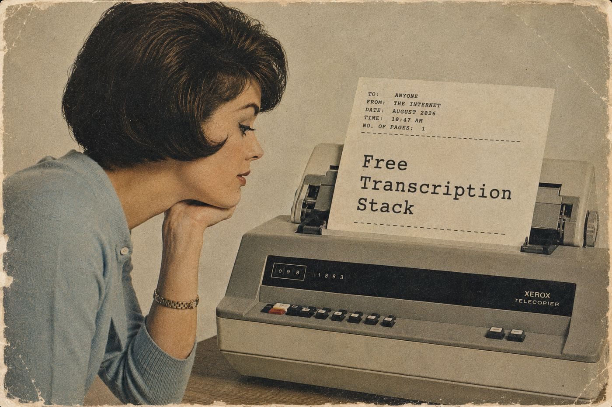

FREE TOOLS, WIRED IN THE RIGHT ORDER
the free transcription stack.
Four open-source tools on one rented GPU, tested on the same audio against Gemini 3.5 Transcribe. Cost 39% less, gave the same answer three times out of three, and never lost nine minutes of speech. Five pages: what it is, the numbers, and the exact spec you can hand to Claude or Codex.
Download the PDF01ffmpegclean the audio
02whisperthe words and the timing
03pyannotewho speaks when
04numpypause, energy, pitch and pacing for every word
05modalone rented gpu runs it all